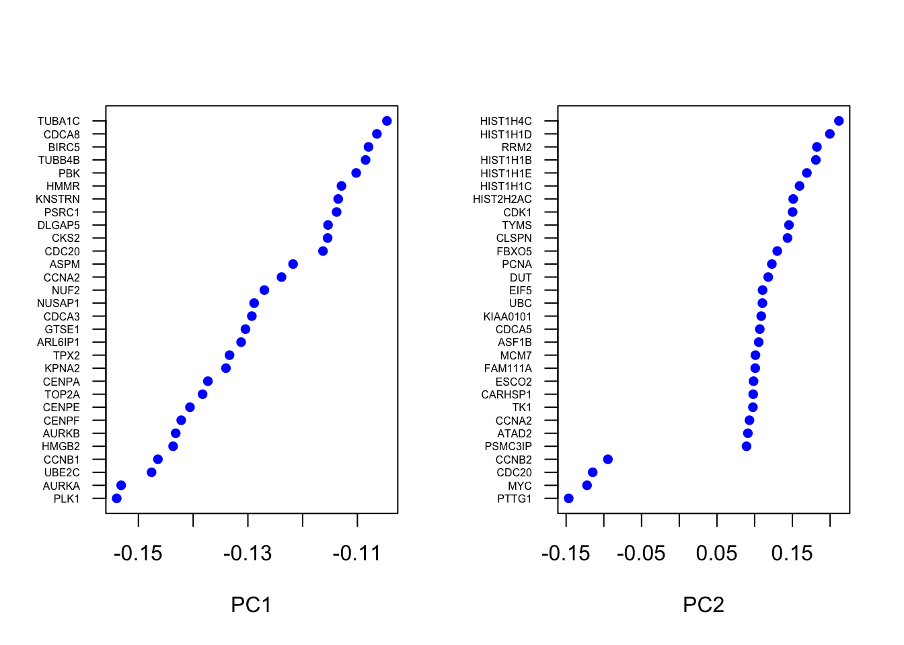
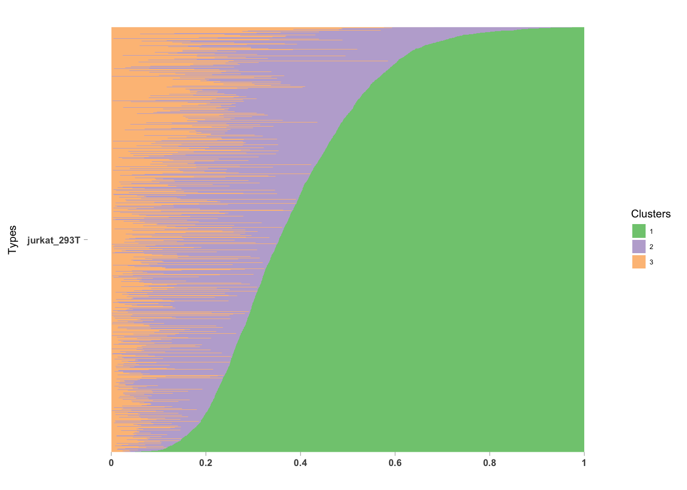
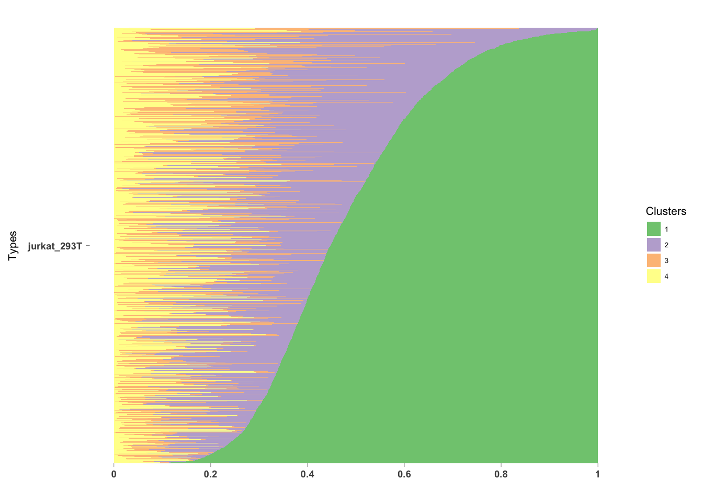
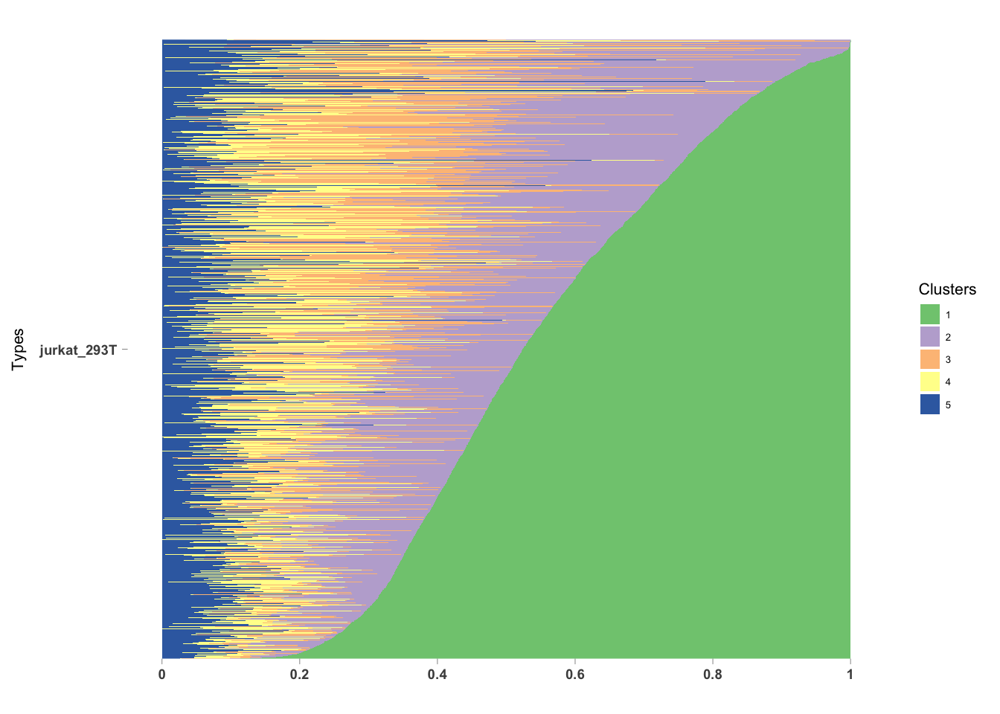

Jurkat + 293T cells (99-1 mix)
Kushal K Dey
9/24/2017
We take a mixture of \(99\%\) mixture of Jurkat cells and \(1\%\) 293T cells. We aim to perform unsupervised Countclust clustering of the cells to see if the clusters picked up in an unsupervised way correspond to the Jurkat cells and 293T cells.
library(cellrangerRkit)library(CountClust)
library(maptpx)
library(ggplot2)
library(MAST)
library(GSEABase)
library(Seurat)
library(classtpx)data <- Read10X("../data/jurkat_293T_99_1/filtered_matrices_mex/hg19/")The dimensionality of the matrix loaded
dim(data)## [1] 32738 4185We first remove all the ribosomal, mitochondrial, small RNA genes reported in the above data matrix.
We report the sample names
colnames(data)[1:10]## [1] "AAACATACGCTGTA" "AAACATACTCAGGT" "AAACATTGGCTTCC" "AAACCGTGACCTAG"
## [5] "AAACGCACCGGGAA" "AAACGCACCTAGTG" "AAACGCTGCACTCC" "AAACGCTGCCCACT"
## [9] "AAACGCTGGACAGG" "AAACGCTGGAGACG"We report the names of the genes
rownames(data)[1:10]## [1] "MIR1302-10" "FAM138A" "OR4F5" "RP11-34P13.7"
## [5] "RP11-34P13.8" "AL627309.1" "RP11-34P13.14" "RP11-34P13.9"
## [9] "AP006222.2" "RP4-669L17.10"idx2 <- which(!is.na(match(substring(rownames(data), 1, 2), c("RP", "MT", "RN"))))data2 <- data[-idx2, ]Remove data from multiple gene mapping and small RNA.
idx3 <- grep("[.]", rownames(data2))
idx4 <- grep("[-]", rownames(data2))data3 <- data2[-union(idx3, idx4), ]We now create a Seurat object using this data matrix.
seuratObj <- new('seurat', raw.data = data3)
seuratObj <- Setup(seuratObj, min.cells = 0, min.genes = 0, project = 'Pantaleo', total.expr = 10000) # no need to filter - already done
#- Output
seuratObj_TFH_global <- seuratObjseuratObj_TFH_global <- MeanVarPlot(seuratObj_TFH_global, fxn.x = expMean, fxn.y = logVarDivMean, x.low.cutoff = 0.25, x.high.cutoff = 3, y.cutoff = 0.5, do.contour = FALSE)
length(seuratObj_TFH_global@var.genes)## [1] 645seuratObj_TFH_global <- PCA(seuratObj_TFH_global, pc.genes = seuratObj_TFH_global@var.genes)## [1] "PC1"
## [1] "PLK1" "AURKA" "UBE2C" "CCNB1" "HMGB2" "AURKB" "CENPF"
## [8] "CENPE" "TOP2A" "CENPA" "KPNA2" "TPX2" "ARL6IP1" "GTSE1"
## [15] "CDCA3" "NUSAP1" "NUF2" "CCNA2" "ASPM" "CDC20" "CKS2"
## [22] "DLGAP5" "PSRC1" "KNSTRN" "HMMR" "PBK" "TUBB4B" "BIRC5"
## [29] "CDCA8" "TUBA1C"
## [1] ""
## [1] "GINS2" "UNG" "SLBP" "PCNA" "CCNE2" "MCM3" "CLSPN"
## [8] "MCM5" "FEN1" "CHAF1A" "SNHG10" "CDC6" "MCM4" "RFC4"
## [15] "MCM6" "ARGLU1" "FAM111B" "MSH6" "E2F1" "HELLS" "TREX1"
## [22] "KLHL23" "EEF2" "MCM2" "MIR142" "DTL" "PSMC3IP" "RGCC"
## [29] "EID1" "ATAD2"
## [1] ""
## [1] ""
## [1] "PC2"
## [1] "PTTG1" "MYC" "CDC20" "CCNB2" "SOX4"
## [6] "CCNB1" "UBE2D3" "LEF1" "CDKN3" "ARPP21"
## [11] "RBMX" "LINC00938" "MZT1" "SNHG10" "FYB"
## [16] "C1orf63" "SNRPA" "ZFP36L2" "RHOH" "LINC01003"
## [21] "HMMR" "PHF7" "PLK1" "MIR142" "GLTSCR2"
## [26] "RCSD1" "TCF7" "SPTBN1" "LDLRAD4" "KIAA0907"
## [1] ""
## [1] "HIST1H4C" "HIST1H1D" "RRM2" "HIST1H1B" "HIST1H1E"
## [6] "HIST1H1C" "HIST2H2AC" "CDK1" "TYMS" "CLSPN"
## [11] "FBXO5" "PCNA" "DUT" "EIF5" "UBC"
## [16] "KIAA0101" "CDCA5" "ASF1B" "MCM7" "FAM111A"
## [21] "ESCO2" "CARHSP1" "TK1" "CCNA2" "ATAD2"
## [26] "PSMC3IP" "NUDT8" "CCNE2" "CDC6" "CTNNAL1"
## [1] ""
## [1] ""
## [1] "PC3"
## [1] "TFDP2" "MZB1" "PTGES3" "VDAC1" "MAP1A" "CD1E"
## [7] "IGLL1" "PTCRA" "GYPC" "LRRC28" "ATP6AP1L" "CD99"
## [13] "HSPA9" "SKP1" "CCT4" "SH3TC1" "MORF4L2" "MYC"
## [19] "ARPP21" "RGCC" "SLIRP" "PSAT1" "RAG1" "SRM"
## [25] "PRDX4" "HNRNPD" "TSHR" "CHORDC1" "CCT8" "CCNB2"
## [1] ""
## [1] "TMSB10" "SH3BGRL3" "SOX4" "MYO1G" "EMP3" "LIMD2"
## [7] "TPM4" "GIMAP7" "TPO" "VIM" "COTL1" "CDKN2D"
## [13] "RCBTB2" "LAT" "MYL6" "ARHGDIB" "CNN2" "DDAH2"
## [19] "ADD3" "ANXA1" "ARPC2" "PPDPF" "SELL" "C9orf16"
## [25] "CORO1A" "ID3" "CASC15" "PTPRC" "PPP1R18" "GATA3"
## [1] ""
## [1] ""
## [1] "PC4"
## [1] "PGK1" "DDX5" "ARHGDIB" "DNAJA1" "PTGES3" "ITM2A" "ITM2B"
## [8] "HSPA9" "CCT8" "CXCR4" "PDIA3" "CCT4" "XRCC6" "PCNA"
## [15] "TUBA1A" "HSP90B1" "SLC3A2" "FDFT1" "HSPA5" "IDI1" "FEN1"
## [22] "SELL" "CD53" "CORO1A" "FDPS" "NAA15" "PPIB" "SLBP"
## [29] "TSPAN7" "PSMD12"
## [1] ""
## [1] "OST4" "MZT2B" "HIST1H4C" "CKLF" "SRM" "TOP2A"
## [7] "GPX4" "RAD23A" "PPDPF" "CENPA" "KIAA0101" "GTSE1"
## [13] "UBE2C" "ZFAS1" "CHCHD10" "EEF2" "SLC25A6" "MKI67"
## [19] "NETO2" "SVIP" "OXLD1" "EEF1A1" "PSRC1" "PMEPA1"
## [25] "IGLL1" "ARPP21" "GYPC" "NGFRAP1" "MAP7D3" "HES4"
## [1] ""
## [1] ""
## [1] "PC5"
## [1] "IL32" "CORO1B" "IGLL1" "CTSG" "TNFRSF4" "C9orf78"
## [7] "GPX4" "TALDO1" "MYO7B" "BST2" "SIX6" "HES4"
## [13] "HSPH1" "CD7" "XRCC6" "SH3TC1" "VAMP5" "ALOX5AP"
## [19] "FAM63B" "ETS2" "ALG3" "CD99" "CHCHD10" "PPAPDC1B"
## [25] "PMEPA1" "TSTD1" "OST4" "CKS1B" "METTL21A" "PDIA6"
## [1] ""
## [1] "ITM2A" "BEX4" "SMC4" "BEX1" "ADD3"
## [6] "LMAN1" "ARPP21" "TFDP2" "GSTM3" "MSH6"
## [11] "H1FX" "RAG1" "SSBP2" "SLC4A7" "MIR181A1HG"
## [16] "PGK1" "SH2D1A" "LEF1" "SYNGR1" "SLC25A6"
## [21] "RASGRP2" "RHOH" "NGFRAP1" "TTC3" "HIST1H1C"
## [26] "GIMAP7" "GTF3C5" "ITGA4" "PDGFC" "CLSPN"
## [1] ""
## [1] ""seuratObj_TFH_global <- ProjectPCA(seuratObj_TFH_global)## [1] "PC1"
## [1] "PLK1" "AURKA" "UBE2C" "CCNB1" "HMGB2" "AURKB" "CENPF"
## [8] "CENPE" "TOP2A" "CENPA" "KPNA2" "TPX2" "ARL6IP1" "GTSE1"
## [15] "CDCA3" "NUSAP1" "NUF2" "CCNA2" "ASPM" "CDC20" "CKS2"
## [22] "DLGAP5" "PSRC1" "KNSTRN" "HMMR" "PBK" "TUBB4B" "BIRC5"
## [29] "CDCA8" "TUBA1C"
## [1] ""
## [1] "GINS2" "UNG" "SLBP" "NACA" "PCNA" "CCNE2"
## [7] "MCM3" "YBX1" "DCTPP1" "CLSPN" "FTL" "MCM5"
## [13] "PABPC1" "FEN1" "CHAF1A" "SNHG10" "NPM1" "HMGN1"
## [19] "CDC6" "C19orf48" "MCM4" "FTH1" "RFC4" "MCM6"
## [25] "ARGLU1" "FAM111B" "CCNE1" "GNB2L1" "MSH6" "E2F1"
## [1] ""
## [1] ""
## [1] "PC2"
## [1] "PTTG1" "MYC" "CDC20" "CCNB2" "EIF1"
## [6] "SOX4" "CCNB1" "UBE2D3" "HNRNPA1" "LEF1"
## [11] "CDKN3" "ARPP21" "RBMX" "LINC00938" "MZT1"
## [16] "EIF4G2" "SRSF5" "SNHG10" "FYB" "C1orf63"
## [21] "HSPE1" "SNRPA" "ZFP36L2" "MPLKIP" "RHOH"
## [26] "MRPL51" "UBE2S" "FKBP1A" "NACA" "LINC01003"
## [1] ""
## [1] "HIST1H4C" "HIST1H1D" "RRM2" "HIST1H1B" "HIST1H1E"
## [6] "HIST1H1C" "HIST2H2AC" "CDK1" "TYMS" "CLSPN"
## [11] "FBXO5" "PCNA" "DUT" "EIF5" "UBC"
## [16] "KIAA0101" "CDCA5" "ASF1B" "MCM7" "FAM111A"
## [21] "ESCO2" "CARHSP1" "TK1" "CENPM" "HIST1H2AM"
## [26] "CENPU" "CCNA2" "HIST1H2AJ" "ATAD2" "PSMC3IP"
## [1] ""
## [1] ""
## [1] "PC3"
## [1] "NPM1" "HSP90AB1" "ENO1" "HSPD1" "RAN" "TFDP2"
## [7] "HSP90AA1" "MZB1" "NME1" "RANBP1" "PTGES3" "LDHA"
## [13] "NCL" "C1QBP" "VDAC1" "EIF5A" "HMGA1" "CACYBP"
## [19] "LDHB" "EIF4A1" "MAP1A" "CD1E" "SERBP1" "IGLL1"
## [25] "PA2G4" "H2AFZ" "APRT" "TPI1" "SIVA1" "RSL1D1"
## [1] ""
## [1] "TMSB10" "TMSB4X" "SH3BGRL3" "SH3BP5" "CD52" "SOX4"
## [7] "PI16" "MYO1G" "KRT1" "EMP3" "LIMD2" "TPM4"
## [13] "GIMAP7" "TPO" "VIM" "COTL1" "CDKN2D" "RCBTB2"
## [19] "LAT" "MYL6" "ARHGDIB" "RETN" "CNN2" "DDAH2"
## [25] "ADD3" "ANXA1" "ARPC2" "PPDPF" "SELL" "C9orf16"
## [1] ""
## [1] ""
## [1] "PC4"
## [1] "PGK1" "DDX5" "HSP90AA1" "HNRNPA2B1" "ARHGDIB"
## [6] "PRDX1" "LDHA" "DNAJA1" "HSP90AB1" "ACTB"
## [11] "CCT5" "EIF4A1" "HNRNPK" "PTGES3" "ITM2A"
## [16] "ITM2B" "HSPA9" "ATP5B" "EIF4A3" "ENO1"
## [21] "CCT8" "NOP58" "TMBIM6" "CXCR4" "PDIA3"
## [26] "CCT2" "HNRNPF" "PKM" "TERF2IP" "CCT4"
## [1] ""
## [1] "OST4" "MZT2B" "GUK1" "UBA52" "ATP5E" "MRP63"
## [7] "SIVA1" "EEF1B2" "SERF2" "HMGA1" "TPT1" "FTL"
## [13] "BOLA3" "NDUFB2" "TOMM7" "TMA7" "UQCRQ" "POLR2I"
## [19] "MZT2A" "C19orf53" "PIF1" "POLR2J" "C17orf89" "COMMD6"
## [25] "YBX1" "MYEOV2" "KRT10" "ARL6IP4" "NHP2" "FTH1"
## [1] ""
## [1] ""
## [1] "PC5"
## [1] "IL32" "CORO1B" "IGLL1" "CTSG" "TNFRSF4" "C9orf78"
## [7] "GPX4" "TALDO1" "MYO7B" "BST2" "SIX6" "FBLN2"
## [13] "HES4" "HSPH1" "CD7" "EFEMP1" "XRCC6" "POLR2E"
## [19] "SH3TC1" "MIF" "VAMP5" "ALOX5AP" "FAM63B" "ETS2"
## [25] "ALG3" "CD99" "CD28" "CHCHD10" "PPAPDC1B" "RBM48"
## [1] ""
## [1] "ITM2A" "BEX4" "PSMB1" "SMC4" "GAPDH"
## [6] "BEX1" "ADD3" "LMAN1" "ARPP21" "KIF5B"
## [11] "PDCD2" "TFDP2" "UBB" "GSTM3" "MALAT1"
## [16] "MSH6" "H1FX" "RAG1" "SLC25A3" "SSBP2"
## [21] "ACTG1" "NPM1" "SLC4A7" "MIR181A1HG" "NDUFS6"
## [26] "PGK1" "SH2D1A" "GNB2L1" "LEF1" "CCT5"
## [1] ""
## [1] ""VizPCA(seuratObj_TFH_global, 1:2)
Mixture (Jurkat + 293T) data Processing and Visualization
t-SNE projection
 ## Jurkat + 293T sorted Data processing
## Jurkat + 293T sorted Data processing
We load the Jurkat cells data.
jurkat_data <- Read10X("../data/jurkat/filtered_matrices_mex/hg19/")
dim(jurkat_data)## [1] 32738 3258t_data <- Read10X("../data/293T/filtered_matrices_mex/hg19/")
dim(t_data)## [1] 32738 2885intersected_genes <- intersect(rownames(data3), intersect(rownames(jurkat_data), rownames(t_data)))data3_filt <- data3[match(intersected_genes, rownames(data3)), ]
jurkat_data_filt <- jurkat_data[match(intersected_genes, rownames(jurkat_data)),]
t_data_filt <- t_data[match(intersected_genes, rownames(t_data)),]dim(jurkat_data_filt)## [1] 19559 3258dim(t_data_filt)## [1] 19559 2885dim(data3_filt)## [1] 19559 4185pooled_data <- rbind(t(jurkat_data_filt), t(t_data_filt), t(data3_filt))Classification results (classtpx + svm)
Full Gene set classtpx study
class_labs <- c(rep("jurkat", dim(jurkat_data_filt)[2]), rep("293T", dim(t_data_filt)[2]))
class_labs_2 <- factor(as.vector(mapvalues(class_labs, from = unique(class_labs), to = 1:length(unique(class_labs)))))
known_indices <- 1:(dim(jurkat_data_filt)[2]+dim(t_data_filt)[2])topic_clus <- get(load("../output/classtpx_jurkat_293T_99_1.rda"))labels2 <- as.factor(apply(topic_clus$omega, 1, function(x) return(which.max(x))))
#labels2_class <- unique(class_labs)[labels2]
data_ggplot <- data.frame(labels2 = labels2[-known_indices],
tSNE_1 = seuratObj_TFH_global@tsne.rot[, 1],
tSNE_2 = seuratObj_TFH_global@tsne.rot[, 2])
plot1 <- ggplot(data_ggplot) + theme(panel.background = element_rect(colour = "black", size = 1),
panel.grid.major = element_blank(),
panel.grid.minor = element_blank(),
axis.text.y = element_blank(),
axis.text.x = element_blank(),
axis.ticks = element_blank(),
legend.text = element_text(size = 15)) + geom_point(aes(x = tSNE_1, y = tSNE_2, color = labels2), size = 0.5) + labs(x = 'tSNE 1', y = 'tSNE 2', title = '') + scale_color_discrete('')
plot1
We now compare this with the SVM based classification results.
Reduced Gene set SVM study
genes1 <- seuratObj_TFH_global@var.genessvm_data <- pooled_data[, match(genes1, colnames(pooled_data))]train_data <- as.matrix(svm_data[known_indices,])
test_data <- as.matrix(svm_data[-known_indices,])
y <- class_labs_2
dat <- cbind.data.frame(y, train_data);## Warning in data.row.names(row.names, rowsi, i): some row.names duplicated:
## 3828,3862,4366,4846,5591,5946,6119 --> row.names NOT usedsvm.control.default <- list(scale = TRUE, type = NULL, kernel ="radial",
degree = 3,
coef0 = 0, cost = 1, nu = 0.5,
class.weights = NULL, cachesize = 40, tolerance = 0.001,
epsilon = 0.1,
shrinking = TRUE, cross = 0, fitted = TRUE)
svm.control <- list()
svm.control <- modifyList(svm.control.default, svm.control)
model_SVM <- do.call(e1071::svm, append(list(formula = y ~ .,
data=dat,
probability=TRUE), svm.control))
prob = predict(model_SVM, test_data, probability=TRUE)
table(prob)## prob
## 1 2
## 4157 28prob_mat <- as.matrix(attr(prob, "probabilities"))
labels3 <- as.factor(apply(prob_mat, 1, function(x) return(which.max(x))))
#labels2_class <- unique(class_labs)[labels2]
data_ggplot <- data.frame(labels3 = labels3,
tSNE_1 = seuratObj_TFH_global@tsne.rot[, 1],
tSNE_2 = seuratObj_TFH_global@tsne.rot[, 2])
plot1 <- ggplot(data_ggplot) + theme(panel.background = element_rect(colour = "black", size = 1),
panel.grid.major = element_blank(),
panel.grid.minor = element_blank(),
axis.text.y = element_blank(),
axis.text.x = element_blank(),
axis.ticks = element_blank(),
legend.text = element_text(size = 15)) + geom_point(aes(x = tSNE_1, y = tSNE_2, color = labels3), size = 0.5) + labs(x = 'tSNE 1', y = 'tSNE 2', title = '') + scale_color_discrete('')
plot1prob_mat <- as.matrix(attr(prob, "probabilities"))
#labels3 <- as.factor(apply(prob_mat, 1, function(x) return(which.max(x))))
#labels2_class <- unique(class_labs)[labels2]
labels3 <- as.factor(apply(prob_mat, 1, function(x)
{
if(max(x) > 0.7){
return(which.max(x))
}else{
return(dim(prob_mat)[2]+1)
}}))
data_ggplot <- data.frame(labels3 = labels3,
tSNE_1 = seuratObj_TFH_global@tsne.rot[, 1],
tSNE_2 = seuratObj_TFH_global@tsne.rot[, 2])
plot1 <- ggplot(data_ggplot) + theme(panel.background = element_rect(colour = "black", size = 1),
panel.grid.major = element_blank(),
panel.grid.minor = element_blank(),
axis.text.y = element_blank(),
axis.text.x = element_blank(),
axis.ticks = element_blank(),
legend.text = element_text(size = 15)) + geom_point(aes(x = tSNE_1, y = tSNE_2, color = labels3), size = 0.5) + labs(x = 'tSNE 1', y = 'tSNE 2', title = '') + scale_color_discrete('')
plot1Reduced Gene set classtpx study
##
## Estimating on a 10328 document collection.
## start the fit
## log posterior increase: 1463.137, done.labels2 <- as.factor(apply(topic_clus$omega, 1, function(x) return(which.max(x))))
#labels2_class <- unique(class_labs)[labels2]
data_ggplot <- data.frame(labels2 = labels2[-known_indices],
tSNE_1 = seuratObj_TFH_global@tsne.rot[, 1],
tSNE_2 = seuratObj_TFH_global@tsne.rot[, 2])
plot1 <- ggplot(data_ggplot) + theme(panel.background = element_rect(colour = "black", size = 1),
panel.grid.major = element_blank(),
panel.grid.minor = element_blank(),
axis.text.y = element_blank(),
axis.text.x = element_blank(),
axis.ticks = element_blank(),
legend.text = element_text(size = 15)) + geom_point(aes(x = tSNE_1, y = tSNE_2, color = labels2), size = 0.5) + labs(x = 'tSNE 1', y = 'tSNE 2', title = '') + scale_color_discrete('')
plot1
labels2 <- as.factor(apply(topic_clus$omega, 1, function(x)
{
if(max(x) > 0.7){
return(which.max(x))
}else{
return(dim(topic_clus$omega)[2]+1)
}}))
#labels2_class <- unique(class_labs)[labels2]
data_ggplot <- data.frame(labels2 = labels2[-known_indices],
tSNE_1 = seuratObj_TFH_global@tsne.rot[, 1],
tSNE_2 = seuratObj_TFH_global@tsne.rot[, 2])
plot1 <- ggplot(data_ggplot) + theme(panel.background = element_rect(colour = "black", size = 1),
panel.grid.major = element_blank(),
panel.grid.minor = element_blank(),
axis.text.y = element_blank(),
axis.text.x = element_blank(),
axis.ticks = element_blank(),
legend.text = element_text(size = 15)) + geom_point(aes(x = tSNE_1, y = tSNE_2, color = labels2), size = 0.5) + labs(x = 'tSNE 1', y = 'tSNE 2', title = '') + scale_color_discrete('')
plot1
Clustering results
topic_clus_list <- get(load("../output/maptpx_jurkat_293T_99_1.rda"))PlotCountClust <- function(topic_clus, fac){
omega <- topic_clus$omega
theta <- topic_clus$theta
annotation <- data.frame(
sample_id = paste0("X", 1:length(fac)),
tissue_label = factor(fac,
levels = rev(unique(fac) ) ) );
rownames(omega) <- annotation$sample_id;
StructureGGplot(omega = omega,
annotation = annotation,
palette = RColorBrewer::brewer.pal(8, "Accent"),
yaxis_label = "Types",
order_sample = TRUE,
axis_tick = list(axis_ticks_length = .1,
axis_ticks_lwd_y = .1,
axis_ticks_lwd_x = .1,
axis_label_size = 7,
axis_label_face = "bold"))
}Structure Plot representation
PlotCountClust(topic_clus_list[[2]], fac)
PlotCountClust(topic_clus_list[[3]], fac)
PlotCountClust(topic_clus_list[[4]], fac)
PlotCountClust(topic_clus_list[[5]], fac)
t-SNE projection + CountClust coloring

This R Markdown site was created with workflowr